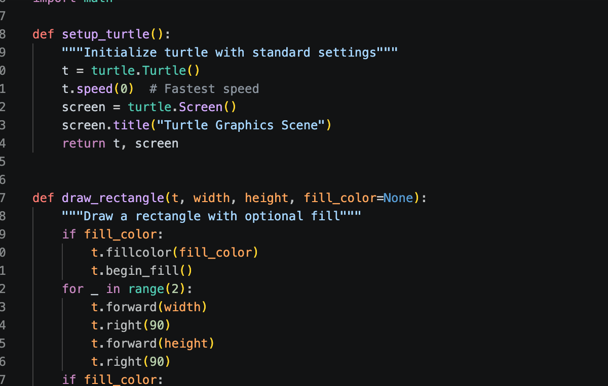
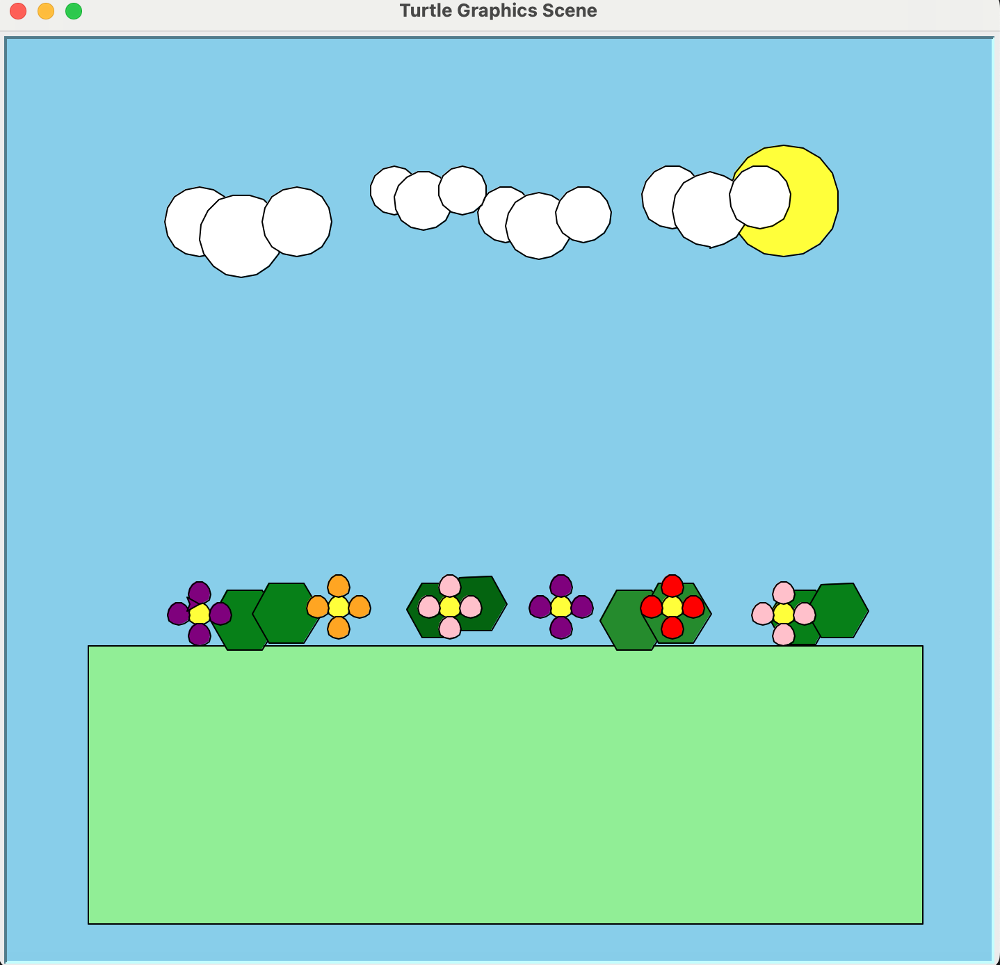

In Project 2, I expanded on the skills I learned in Project 1 by creating a more detailed outdoor scene using Python Turtle graphics. I added elements such as flowers, clouds, grass, and a sun to make the scene more realistic and visually interesting. This project helped me practice positioning objects on the screen, using different colors, and combining multiple shapes into one complete design.
This section of code shows how I organized my Turtle graphics project using functions. Instead of rewriting the same commands multiple times, I created reusable functions to draw different shapes and objects throughout the scene. This made the code easier to read, edit, and expand as I added more details to the project.


The final scene combines several Turtle graphics elements, including flowers, clouds, grass, and a bright sun. Each object was created using basic shapes and then positioned to form a complete outdoor landscape. Adding more objects and details helped make the scene more visually appealing while giving me additional practice with Turtle graphics and scene design.